Ro brings research, design and testing to complex industries, making sure products work for the people who rely on them.
All work
Product, research and brand projects.
-

RealDays
My venture, Victoria and Bali
A booking platform for small, owner-run experience businesses, from motorbike research in Bali to Stripe payments and listings arranged for AI search.
See Project -
Salty Cowboy booking engine
Salty Cowboy
A booking engine for a horse rescue in Bali that only offers riders the rides that fit them. Designed and built with AI, and the start of RealDays.
See Project -
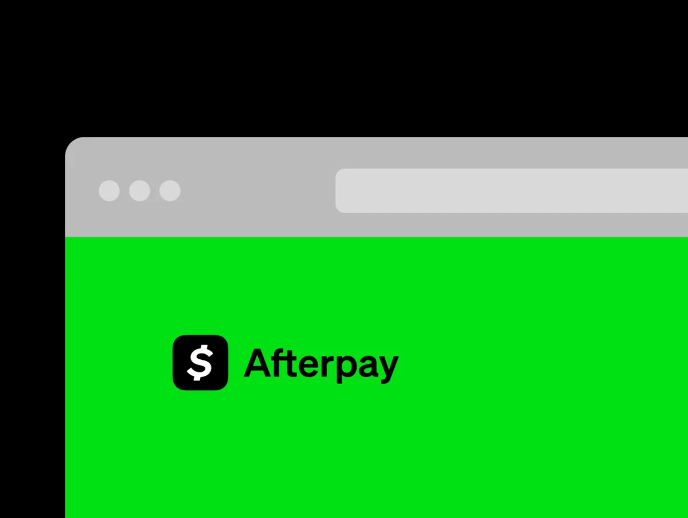
CRO tests to generate leads
Afterpay
Setting up Afterpay’s Global CRO (Conversion Rate Optimisation) program, with a UX lens.
See Project -
Afterpay’s new B2B site
Afterpay
Designing Afterpay’s new B2B website for every international market, with AI workflows that go from strategy to wireframes to UI.
See Project -

Legal Document Review Tool
NAB’s Innovation Team
Designing an AI-powered tool (MVP) that streamlines NAB paralegals’ trust deed reviews - cutting average review time from forty five minutes to five.
See Project -
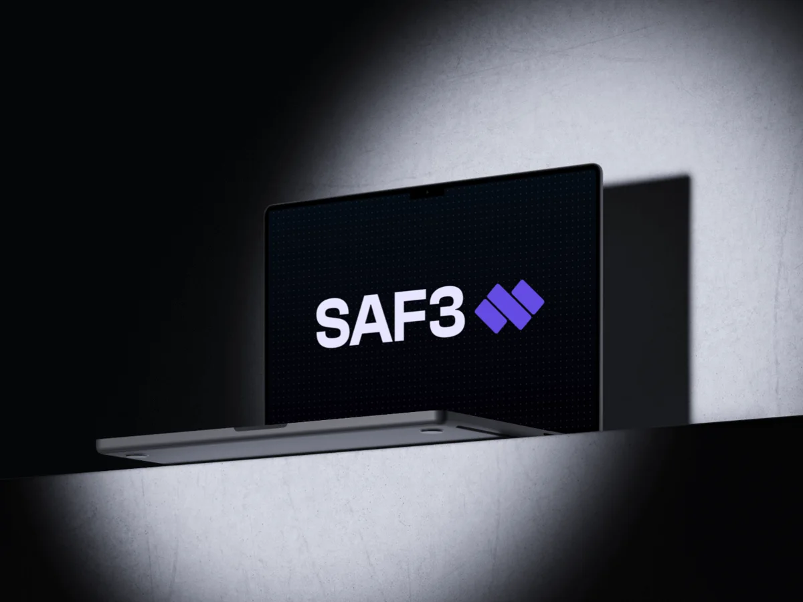
SAF3 MVP
NAB’s Innovation Team x Zodia Custody
Defined the design and research direction for SAF3, an institutional crypto custody solution from NAB and Zodia Custody’s partnership to bridge traditional finance and crypto.
See Project -
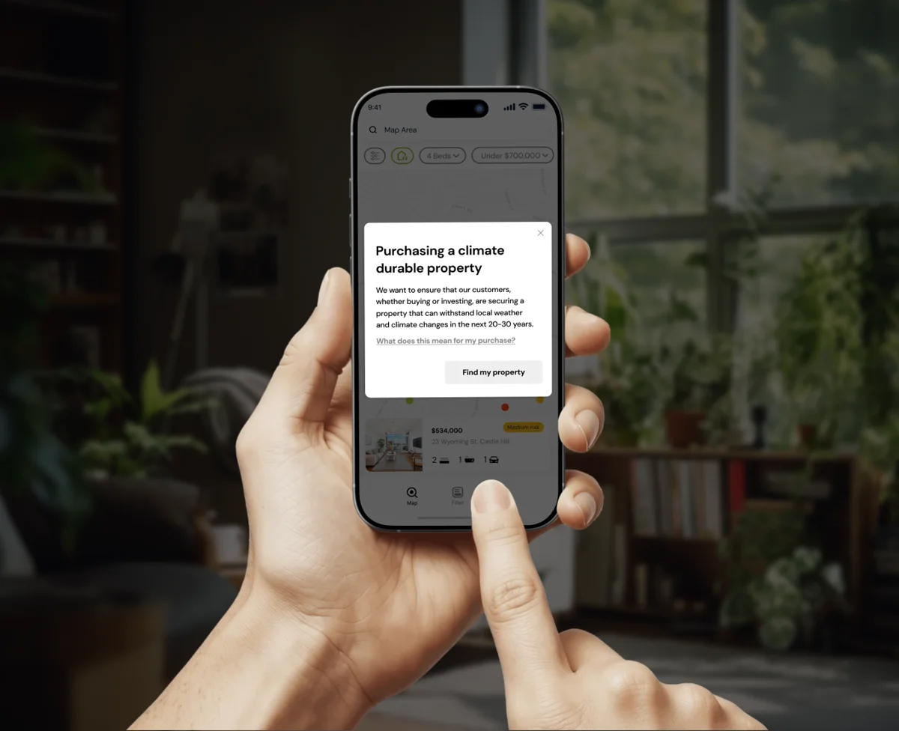
Climate Risk Dashboard
NAB’s Innovation Team
Designing for the future of the Australian property market with NAB’s Innovation and Strategy teams.
See Project -
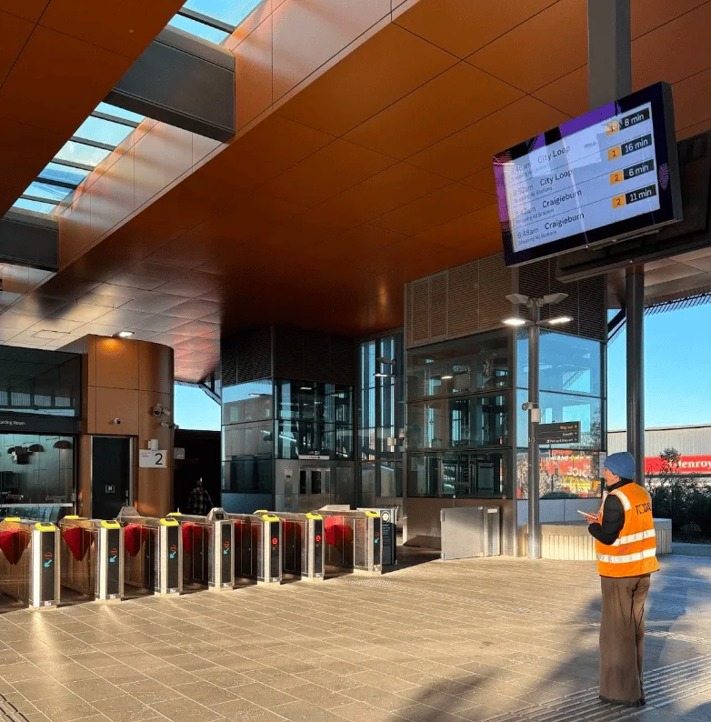
Victoria’s new myki system
Department of Transport and Planning
Working with the Department of Transport and Planning to ensure new myki system meets the needs of Victoria’s general public.
See Project -
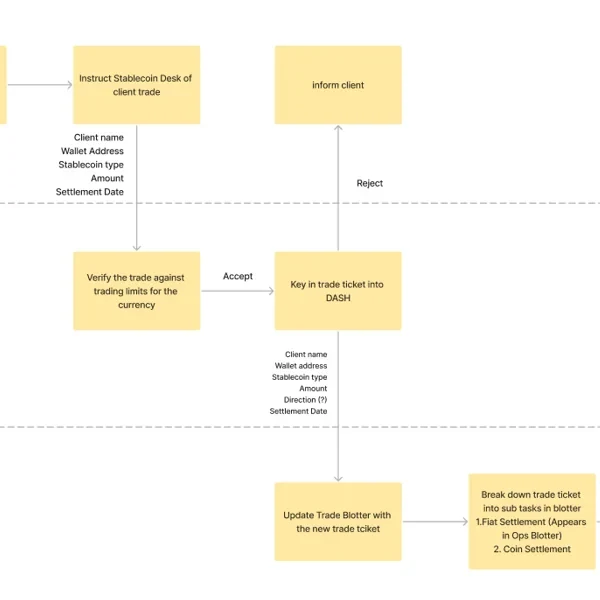
Mapping NAB’s Stablecoin (AUDN)
NAB
Mapping NAB’s first-ever stablecoin (AUDN) to assist with gap identification and compliance mapping.
See Project -
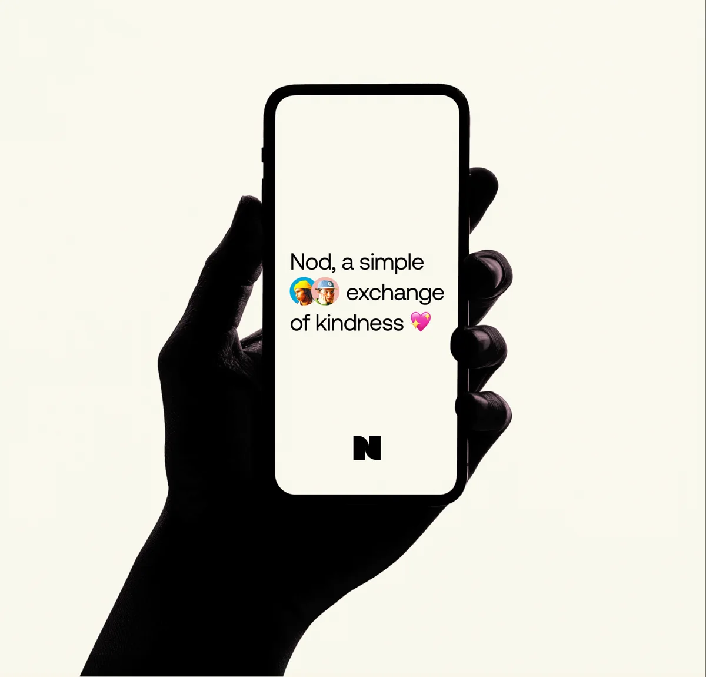
Nod
ED.
Having fun with research and concept creation whilst designing to make an impact for service workers.
See Project -
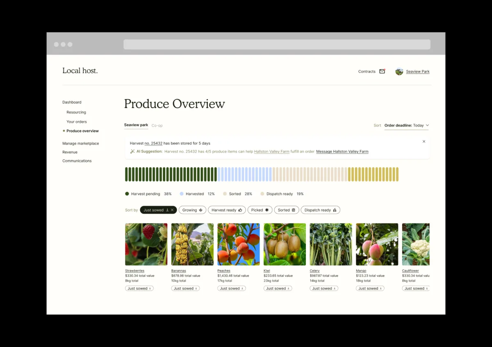
Local Host
Direct-from-farm produce platform
Concept, enabling farmers to manage and sell produce directly to customers.
See Project -
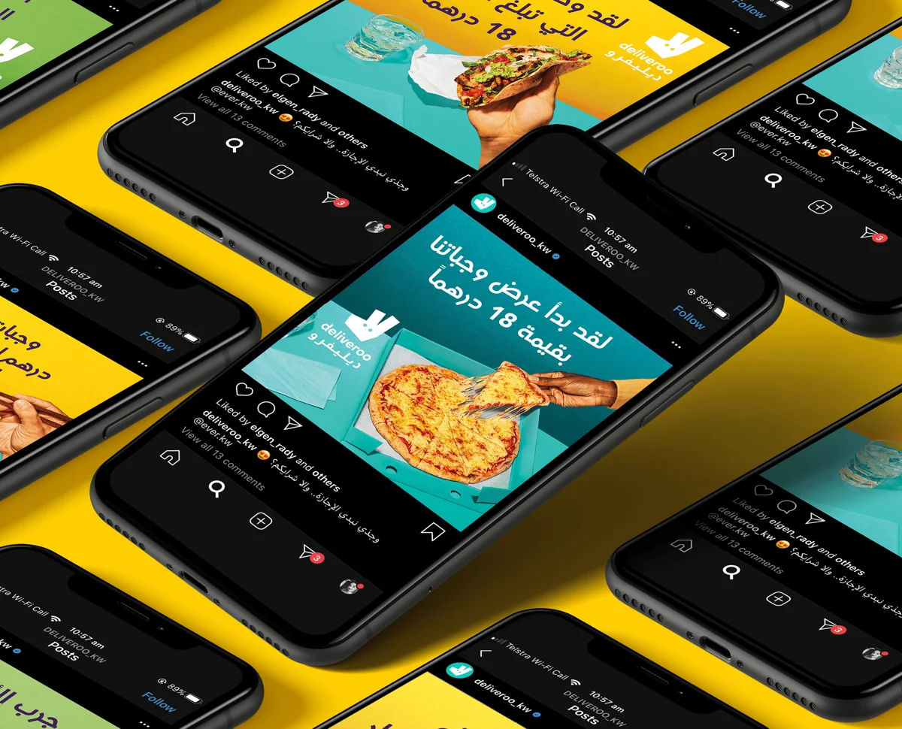
Deliveroo Social Media ads
Deliveroo (UAE)
Social media ads created for Deliveroo’s UAE market, where I was responsible for art-working photography and typesetting.
-
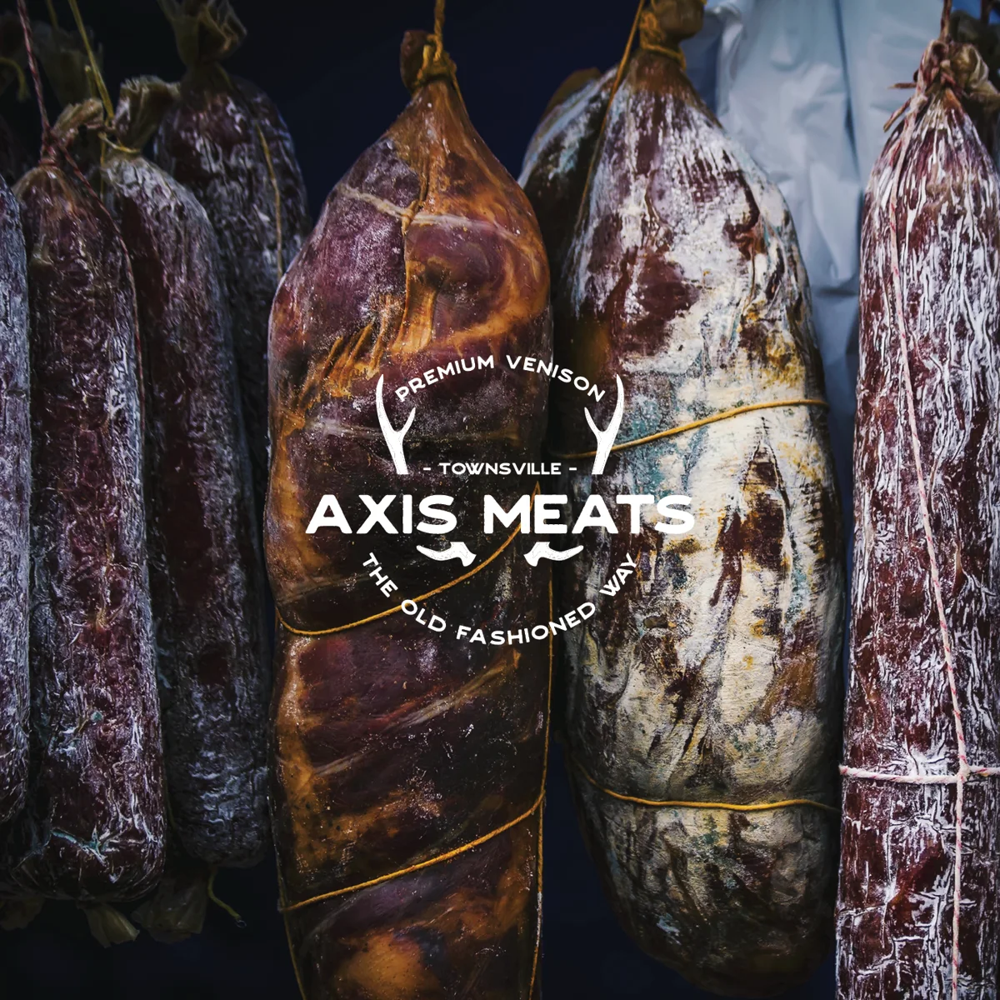
Axis Meats, Identity
Axis Meats, Townsville
Axis Meats is a boutique butcher based in Townsville, specialising in cured meats and authentic biltong made from dried venison. The brand pays homage to a family tradition of biltong curing passed down through generations.
-
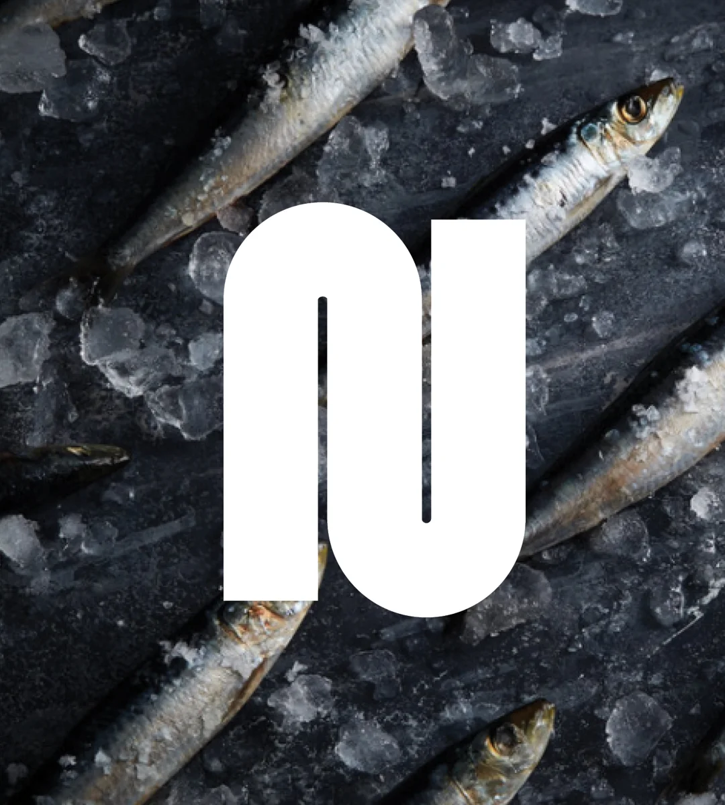
Nguyen Dang Photography, Identity
Nguyen Dang Photography
Brand identity made to represent Nguyen Dang’s cutting-edge style of photography.
-
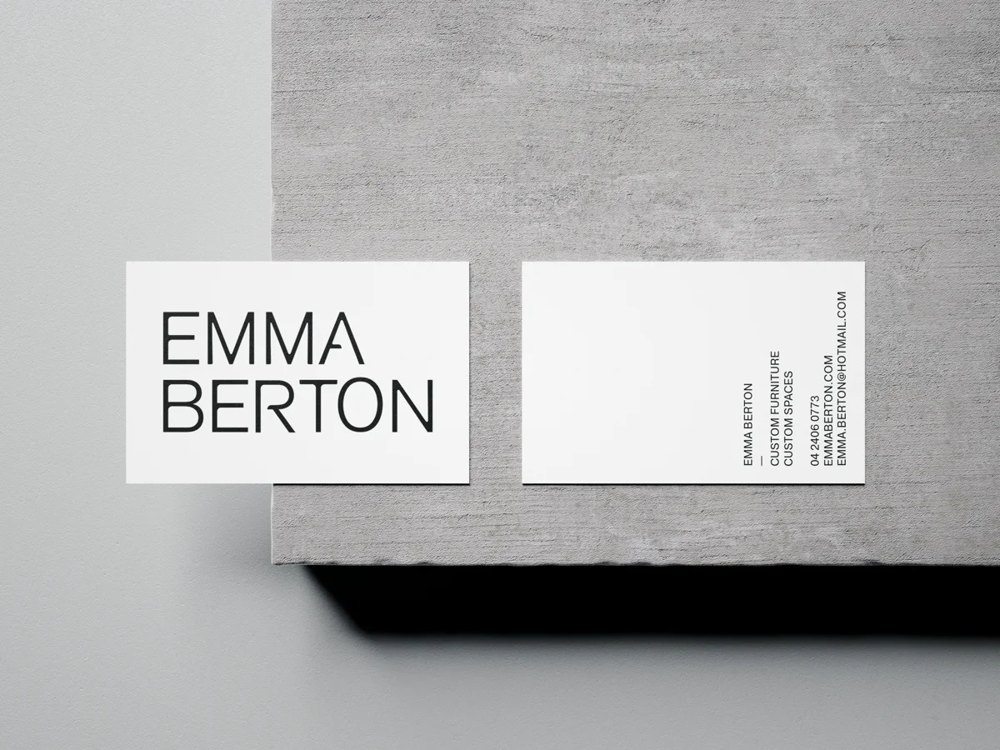
Emma Berton
Custom furniture designer
Melbourne furniture designer Emma Berton’s work embodies Bauhaus-inspired simplicity, practicality, and intentional form. Her brand identity includes a custom word-mark with gentle curves and precise cuts that mirror her design approach.
How I use AI in my practice
AI gets me from a messy problem to something real, faster. I use it to widen research, speed up design and ship working products, and I decide where a person needs to stay in charge.
AI workflows I’ve built
-
Wireframe builder
Figma and Claude turn strategy, personas and approved modules into wireframe pages.
Afterpay -
Learn from my edits
Compares my reworked wireframe with the AI draft and updates the workflow so the correction sticks.
Afterpay -
UX to UI
Builds high-fidelity pages and locale variants from real design system components.
Afterpay -
Competitive usability evaluation
Plans, runs and reports competitor reviews using the Nielsen Norman Group method.
Discovery -
Audits, user flows and sitemaps
A documented AI process for competitor audits, user flow and sitemap generation.
Discovery -
Deep research
Gemini Deep Research and research workflows in Claude to widen discovery before decisions are made.
Research -
Design to working product
A trilingual booking engine designed, coded, tested and deployed with Claude Code.
Salty Cowboy, RealDays -
This portfolio
Moved out of Figma into code I edit by prompting, so changes and new work go live in minutes.
rowenabaulch.com.au
See it in practice
- RealDays Designed and built with AI, from research to payments
- Afterpay’s new B2B site AI wireframe, review and UX to UI workflows
Companies
Nine years across fintech, government, social innovation and global consumer brands.
-
2025 – 2026
Afterpay (Freelance)UX Lead
Led strategy and design for Afterpay’s new global B2B website, and owned its CRO (conversion rate optimisation) strategy.
-
2025
Today (Freelance)Strategic Designer
Uncovered customer trends and accessibility needs for Victoria’s new myki readers, and delivered the final report to the Department of Transport and Planning.
-
2022 – 2025
NAB Innovation TeamProduct Designer
Delivered NAB’s first crypto MVP for institutional customers, and an AI tool that cut trust-deed review from 45 minutes to 5.
-
2021 – 2022
ED.UX/UI Designer
Led evaluative research for Athena Home Loans and designed The Sydney Dialogues website.
-
2019 – 2021
DeliverooAPAC Designer
Designed multilingual campaigns, including Arabic and Cantonese, that lifted click-through rates.
-
2017 – 2018
HM.Designer
Designed wayfinding for Metro and PTV.
Beyond work
Outside of work, I’m an avid explorer drawn to adventures. Pictured here is a moment from my stay in Mongolia with a family of eagle hunters (sadly not pictured). Back home, I spend my time climbing, life drawing, hiking, and experimenting with photography.
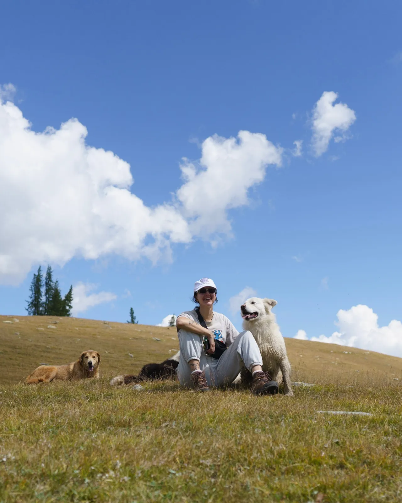